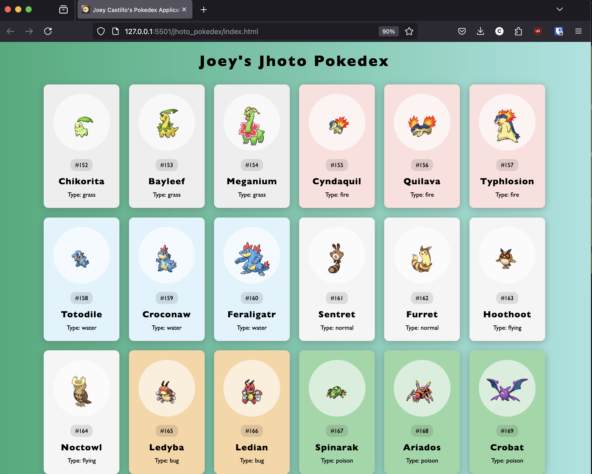

Kanto Pokedex

This is an application that used the RESTFUL PokeAPI to create a pokedex for the Kanto region.
Jhoto Pokedex
This is an application that used the RESTFUL PokeAPI to create a pokedex for the Jhoto region.
Hoenn Pokedex

This is an application that used the RESTFUL PokeAPI to create a pokedex for the Hoenn region.